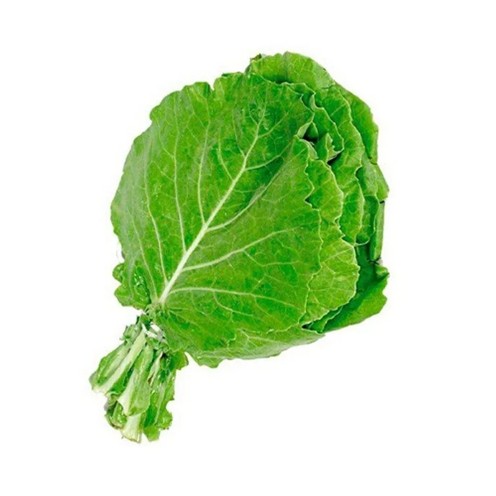
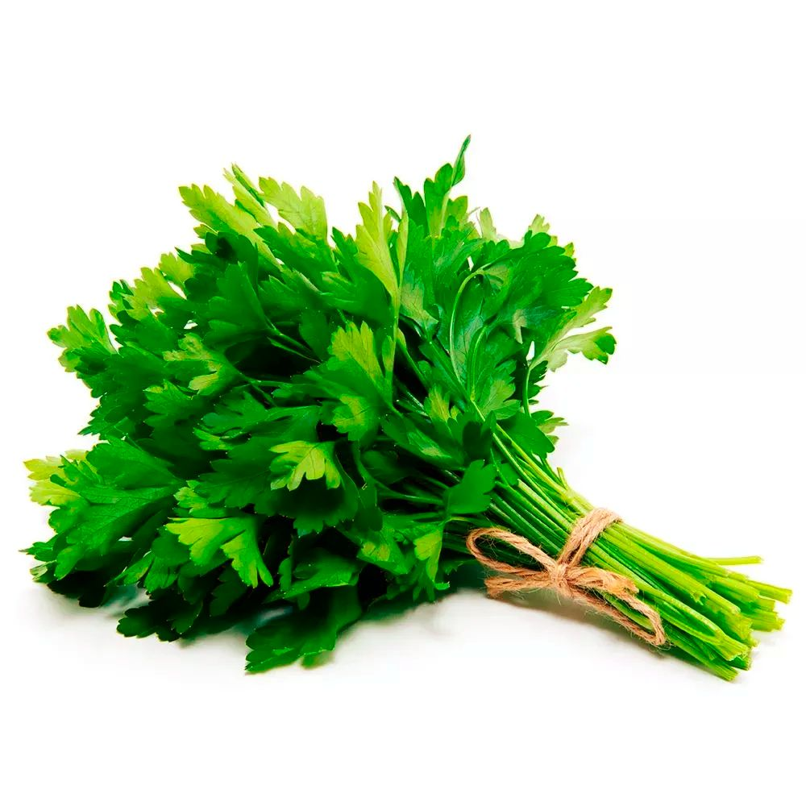
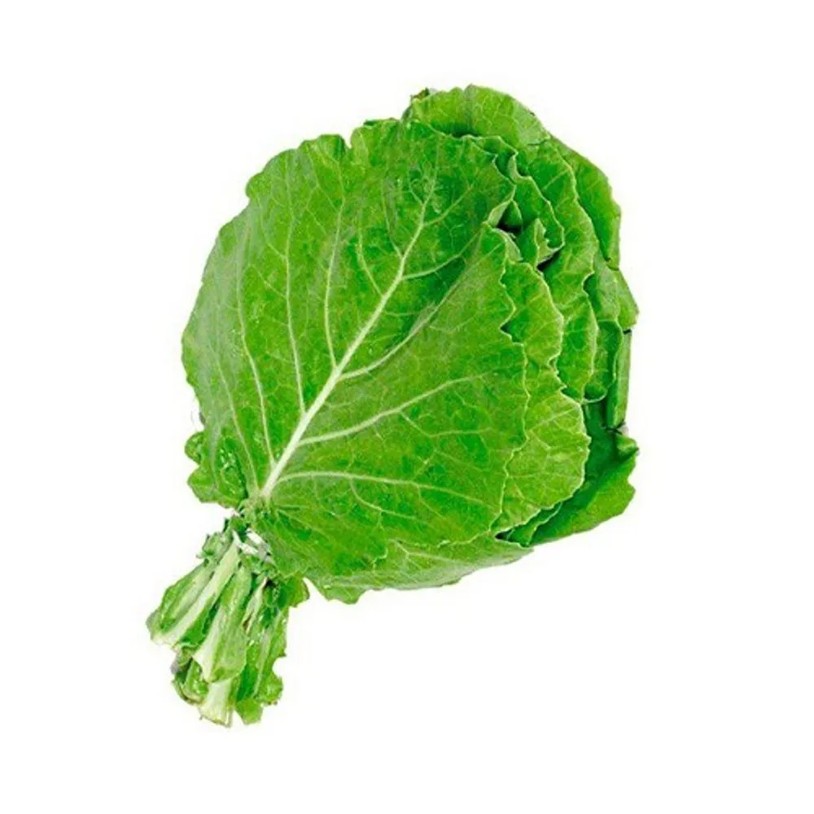
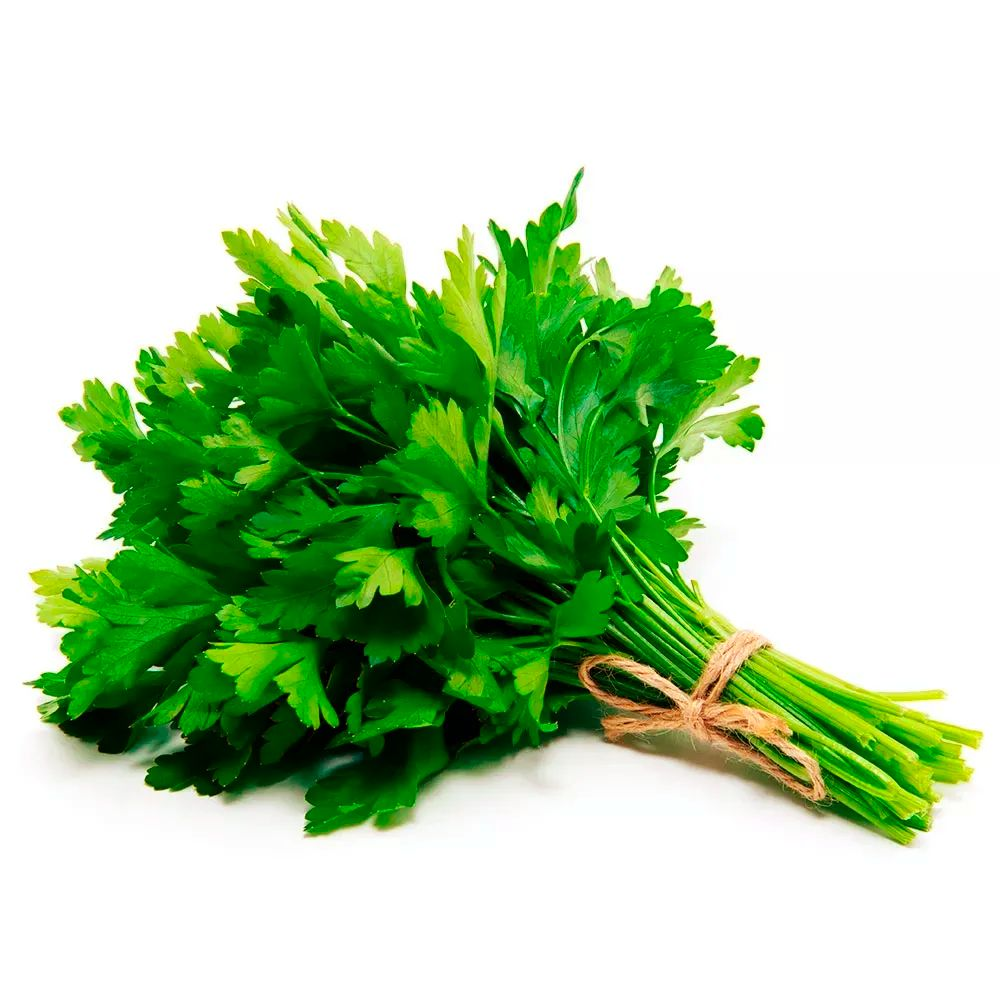
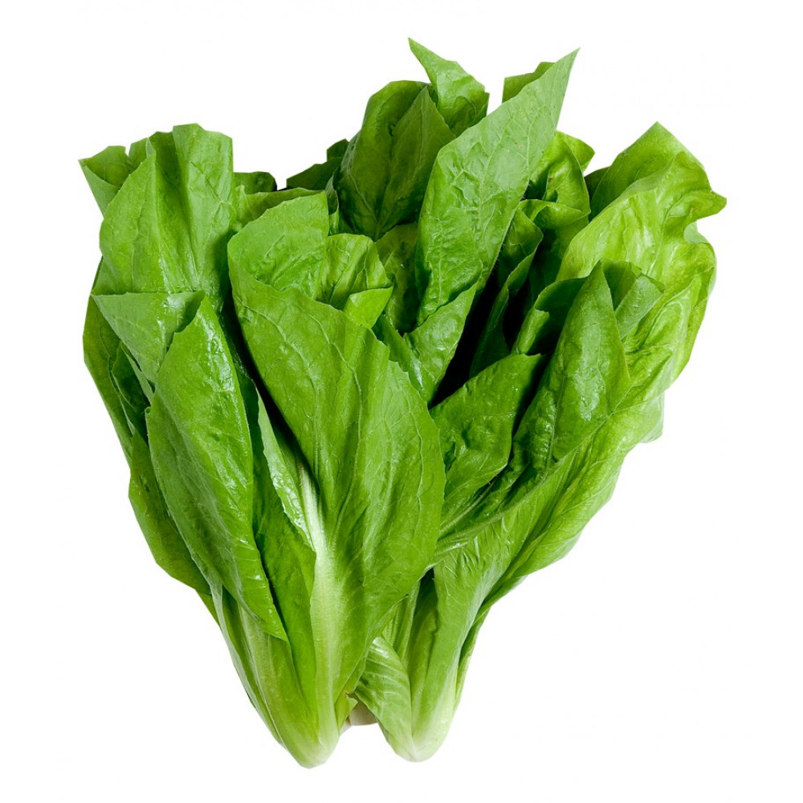
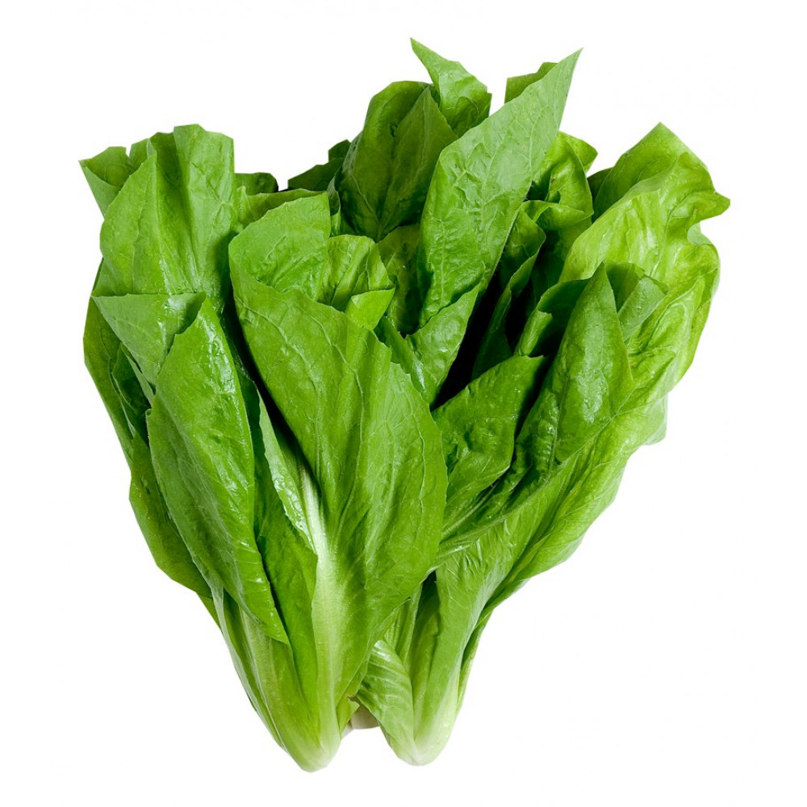

HORTA VERTICAL AUTOMATIZADA
Uma proposta voltada especialmente as pessoas que buscam sustentabilidade e praticidade. Com a finalidade da otimização do tempo e tornar acessível para que mais pessoas possam cultivar suas plantações orgânicas!
Sugestões para seu plantio.

 



Cebolinha (1)
Alface (2)
Couve (3)
Salsinha (4)
 
